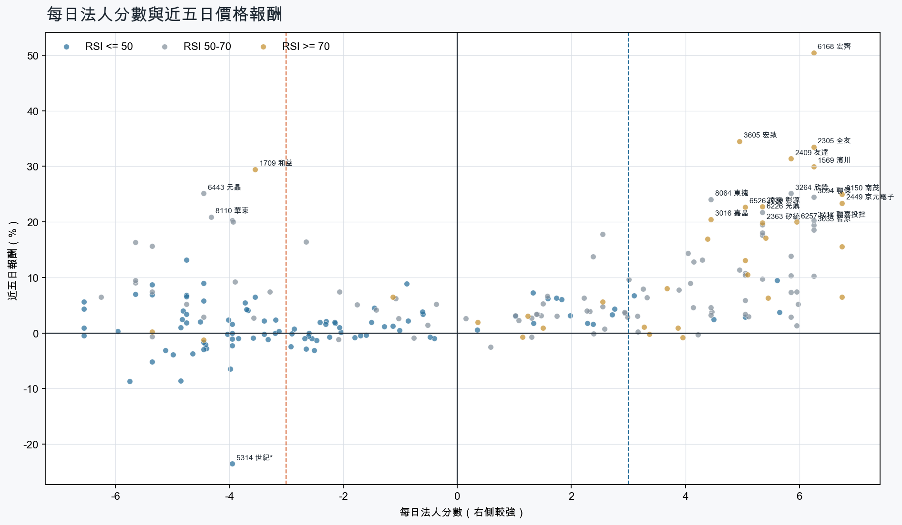
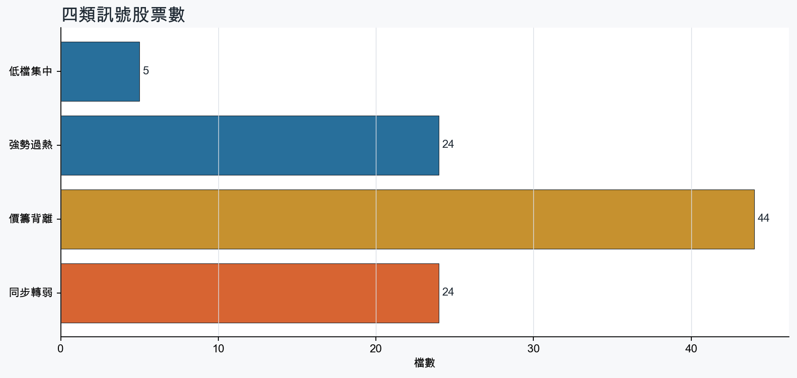
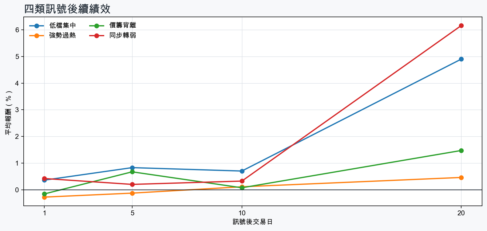

市場情緒偏多
近5日法人合計+3,479,065 張
篩選池上漲比例78.2%
籌碼好 / RSI低5 檔
籌碼差 / 價跌15 檔



EPS × PE VALUATION
法人常用的相對估值
顯示保守、基準與樂觀估值帶，不把單一數字包裝成精準目標價。
最新累計 EPS 依季數年化 × 同產業有效 P/E 的 Q25／中位數／Q75。排除本公司、非正 P/E，並以 1.5×IQR 排除離群值。估值帶是公開資料篩選值，不是法人目標價；未使用分析師預估 EPS。
MOOD × MONEY
情緒與籌碼雷達
熱度代表被討論程度；情緒分與法人方向分開計算。熱門不等於適合追價，樣本不足也不硬判多空。
| 股票 | 情緒 | 討論熱度 | 情緒 × 籌碼 | 情緒 × 基本面 |
|---|---|---|---|---|
| 2454 聯發科強勢過熱 | 中性分歧 +7.2信心 100 | 1006 篇 / 170 留言 / 3 則新聞 | 高熱分歧法人分 +4.4 | 基本面與情緒分歧基本面分 +3.0 |
| 2303 聯電強勢過熱 | 情緒高漲 +56.8信心 100 | 933 篇 / 122 留言 / 3 則新聞 | 情籌共振法人分 +6.8 | 基本面與情緒共振基本面分 +3.6 |
| 2030 彰源強勢過熱 | 偏空 -29.6信心 59 | 901 篇 / 121 留言 / 0 則新聞 | 法人布局、市場悲觀法人分 +5.3 | 基本面佳、情緒悲觀基本面分 +3.6 |
| 3450 聯鈞價籌背離 | 情緒高漲 +73.3信心 73 | 791 篇 / 55 留言 / 3 則新聞 | 熱門但法人撤退法人分 -4.8 | 基本面與情緒共振基本面分 +3.6 |
| 3167 大量價籌背離 | 情緒高漲 +40.0信心 82 | 781 篇 / 51 留言 / 3 則新聞 | 熱門但法人撤退法人分 -5.7 | 基本面與情緒共振基本面分 +3.6 |
| 6446 藥華藥同步轉弱 | 偏多 +23.2信心 57 | 621 篇 / 12 留言 / 3 則新聞 | 熱門但法人撤退法人分 -4.6 | 基本面與情緒共振基本面分 +3.6 |
| 6168 宏齊強勢過熱 | 偏多 +27.0信心 51 | 571 篇 / 8 留言 / 2 則新聞 | 情籌共振法人分 +6.2 | 基本面與情緒共振基本面分 +1.2 |
| 5314 世紀*同步轉弱 | 偏空 -29.7信心 30 | 430 篇 / 0 留言 / 3 則新聞 | 情籌雙弱法人分 -4.0 | 基本面佳、情緒悲觀基本面分 +3.6 |
| 6669 緯穎同步轉弱 | 中性分歧 +0.0信心 30 | 430 篇 / 0 留言 / 3 則新聞 | 情籌混合法人分 -5.8 | 基本面與情緒分歧基本面分 +3.0 |
| 8039 台虹同步轉弱 | 中性分歧 +0.0信心 30 | 430 篇 / 0 留言 / 3 則新聞 | 情籌混合法人分 -4.4 | 基本面與情緒分歧基本面分 -0.1 |
| 3624 光頡同步轉弱 | 中性分歧 +0.0信心 30 | 430 篇 / 0 留言 / 3 則新聞 | 情籌混合法人分 -4.5 | 基本面與情緒分歧基本面分 +3.6 |
| 2506 太設同步轉弱 | 偏多 +29.7信心 30 | 430 篇 / 0 留言 / 3 則新聞 | 熱門但法人撤退法人分 -4.0 | 基本面與情緒共振基本面分 +3.6 |
01
籌碼好 / RSI低
優先研究基本面；法人續買且價格止穩時，才適合分批觀察。
| 股票 / 確認狀態 | 每日法人分 | 浦男式近似 | 法人加速度 | RSI / 相對強弱 | 量價確認 | 融資融券 | 每週集保確認 | 基本面 | EPS × 同業 P/E 估值 | 情緒 / 情籌 | 近期消息 | 論壇討論 |
|---|---|---|---|---|---|---|---|---|---|---|---|---|
| 2340 台亞等待確認 · 93 分先等基本面止穩 | +5.6法人 +3,686 張 / 5 天 | 接近 · 74站上月線；中期均線偏多；法人籌碼偏多；留意相對強度普通、基本面偏弱 | +707 張近3日 +1,972 / 連續 +5 日 | 49.7相對大盤 -1.2% | 量比 0.94確認分 +4.2價格、量能與籌碼未見明顯弱項 | -%融資 - 張 / 融券 - 張 | +0.88 pp1000張 +0.26 pp | 單月營收年增 +21.9%；累計營收年增 +4.8%2026 Q2 累計 EPS -0.93；2026 Q2 累計營益率 -22.1%來源：公開資訊觀測站 | 不適用年化 EPS 非正數，不適合使用本益比估值 | 樣本不足 +0.0熱度 0 / 信心 0情緒樣本不足 | 近期沒有通過股票語境篩選的新聞 | 近期沒有明確提及本股的論壇樣本 |
| 2377 微星等待確認 · 74 分籌碼有訊號，但價格尚未確認 | +5.7法人 +6,121 張 / 5 天 | 接近 · 70站上月線；中期均線偏多；法人籌碼偏多；留意法人買盤未加速、量能異常 | -2,450 張近3日 +1,771 / 連續 +5 日 | 48.5相對大盤 +0.8% | 量比 0.51確認分 -0.7成交量不足；法人買盤減速 | -%融資 - 張 / 融券 - 張 | +1.71 pp1000張 +2.06 pp | 2026 Q2 累計 EPS 7.59單月營收年增 -6.1%；累計營收年增 -6.4%；2026 Q2 累計營益率 6.7%來源：公開資訊觀測站 | 基準 NT$ 248.3估值帶 188.8–364.5現價 153.5 · 低於估值帶 · 距基準 +61.8%2026 Q2 累計 EPS 7.59 → 年化 15.18電腦及週邊同業 P/E 12.44／16.36／24.01 · n=78 · 信心中等以 Q2 累計 EPS 年化，不等同分析師全年預估來源：TWSE／TPEx 每日本益比 | 樣本不足 +0.0熱度 0 / 信心 0情緒樣本不足 | 近期沒有通過股票語境篩選的新聞 | 近期沒有明確提及本股的論壇樣本 |
| 1312 國喬等待確認 · 74 分先等基本面止穩 | +4.5法人 +11,860 張 / 4 天 | 接近 · 64站上月線；中期均線偏多；法人籌碼偏多；留意法人買盤未加速、量能異常 | -7,961 張近3日 +1,577 / 連續 +2 日 | 43.5相對大盤 +18.2% | 量比 0.29確認分 +1.1成交量不足；法人買盤減速 | -%融資 - 張 / 融券 - 張 | +0.88 pp1000張 +1.09 pp | 單月營收年增 +89.2%；累計營收年增 +20.2%2026 Q2 累計 EPS -1.68；2026 Q2 累計營益率 -11.2%來源：公開資訊觀測站 | 不適用年化 EPS 非正數，不適合使用本益比估值 | 樣本不足 +0.0熱度 0 / 信心 0情緒樣本不足 | 近期沒有通過股票語境篩選的新聞 | 近期沒有明確提及本股的論壇樣本 |
| 2408 南亞科等待確認 · 69 分籌碼有訊號，但價格尚未確認 | +3.1法人 +18,520 張 / 3 天 | 接近 · 75中期均線偏多；法人籌碼偏多；法人買盤加速；留意未站月線、明顯弱於大盤 | +8,112 張近3日 +9,353 / 連續 -2 日 | 45.9相對大盤 -8.4% | 量比 1.00確認分 +0.5收盤跌破20日線；近20日弱於大盤 | -%融資 - 張 / 融券 - 張 | -2.03 pp1000張 -2.89 pp | 單月營收年增 +560.9%；累計營收年增 +638.2%；2026 Q2 累計 EPS 23.38仍需觀察下一期財報延續性來源：公開資訊觀測站 | 基準 NT$ 1,307估值帶 862.7–2,208現價 497.0 · 低於估值帶 · 距基準 +163.1%2026 Q2 累計 EPS 23.38 → 年化 46.76半導體同業 P/E 18.45／27.96／47.22 · n=149 · 信心中等以 Q2 累計 EPS 年化，不等同分析師全年預估來源：TWSE／TPEx 每日本益比 | 中性分歧 +0.0熱度 43 / 信心 30情籌混合 | 【Hot台股】南亞科由紅翻黑跌逾2% 網哀「相對剝奪感超大」 分析師：逢低可接Yahoo股市 · 09/22外資才喊股價8字頭！南亞科卻翻黑跌破500元「網怒噴：又是抓交替？」技術面防守關鍵點曝光- 上市櫃旺得富理財網 · 09/22 | 近期沒有明確提及本股的論壇樣本 |
| 1718 中纖等待確認 · 59 分籌碼有訊號，但價格尚未確認 | +5.0法人 +15,576 張 / 4 天 | 未命中 · 54站上月線；法人籌碼偏多；買超具延續性；留意中期均線未翻多、法人買盤未加速 | -11,472 張近3日 +1,947 / 連續 +2 日 | 48.1相對大盤 -5.3% | 量比 0.63確認分 -3.720日線低於60日線；近20日弱於大盤；成交量不足；法人買盤減速 | -%融資 - 張 / 融券 - 張 | +1.64 pp1000張 +1.77 pp | 單月營收年增 +4.4%；累計營收年增 +3.3%；2026 Q2 累計 EPS 0.46仍需觀察下一期財報延續性來源：公開資訊觀測站 | 基準 NT$ 18.00估值帶 12.40–23.26現價 10.70 · 低於估值帶 · 距基準 +68.2%2026 Q2 累計 EPS 0.46 → 年化 0.92化學工業同業 P/E 13.48／19.56／25.28 · n=32 · 信心中等以 Q2 累計 EPS 年化，不等同分析師全年預估來源：TWSE／TPEx 每日本益比 | 樣本不足 +0.0熱度 0 / 信心 0情緒樣本不足 | 近期沒有通過股票語境篩選的新聞 | 近期沒有明確提及本股的論壇樣本 |
02
籌碼好 / RSI高
趨勢強但不追價，等待量縮、RSI降溫或回測支撐。
| 股票 / 確認狀態 | 每日法人分 | 浦男式近似 | 法人加速度 | RSI / 相對強弱 | 量價確認 | 融資融券 | 每週集保確認 | 基本面 | EPS × 同業 P/E 估值 | 情緒 / 情籌 | 近期消息 | 論壇討論 |
|---|---|---|---|---|---|---|---|---|---|---|---|---|
| 2303 聯電等待拉回 · 100 分等拉回，不追價 | +6.8法人 +149,999 張 / 5 天 | 接近 · 90站上月線；中期均線偏多；法人籌碼偏多；留意RSI過熱 | +80,994 張近3日 +107,212 / 連續 +5 日 | 78.3相對大盤 +22.2% | 量比 1.46確認分 +6.5價格、量能與籌碼未見明顯弱項 | -%融資 - 張 / 融券 - 張 | +1.75 pp1000張 +1.58 pp | 單月營收年增 +30.7%；累計營收年增 +14.7%；2026 Q2 累計 EPS 4.68仍需觀察下一期財報延續性來源：公開資訊觀測站 | 基準 NT$ 261.7估值帶 172.7–442.0現價 160.0 · 低於估值帶 · 距基準 +63.6%2026 Q2 累計 EPS 4.68 → 年化 9.36半導體同業 P/E 18.45／27.96／47.22 · n=149 · 信心中等以 Q2 累計 EPS 年化，不等同分析師全年預估來源：TWSE／TPEx 每日本益比 | 情緒高漲 +56.8熱度 93 / 信心 100情籌共振 | 2303 聯電 - 過去一周板塊輪動:台達電被搶進，緯穎被丟出- 股市爆料同學會cmoney.tw · 09/222303 聯電 - 7/16高點$168達標 - 股市爆料同學會cmoney.tw · 09/22 | [標的] 2303 聯電 二哥壯膽多PTT Stock · 09-19 · 61 留言[新聞] 「低本益比族群」伺機補漲 力積電、聯電PTT Stock · 09-20 · 34 留言 |
| 2449 京元電子等待拉回 · 100 分等拉回，不追價 | +6.8法人 +55,829 張 / 5 天 | 命中 · 91站上月線；中期均線偏多；法人籌碼偏多；留意量能尚未確認、動能位置非最佳 | +51,314 張近3日 +52,532 / 連續 +5 日 | 72.5相對大盤 +26.5% | 量比 2.65確認分 +5.8價格、量能與籌碼未見明顯弱項 | -%融資 - 張 / 融券 - 張 | +0.71 pp1000張 +0.85 pp | 單月營收年增 +31.6%；累計營收年增 +35.5%；2026 Q2 累計 EPS 3.91仍需觀察下一期財報延續性來源：公開資訊觀測站 | 基準 NT$ 215.5估值帶 144.3–369.3現價 317.0 · 估值帶內 · 距基準 -32.0%2026 Q2 累計 EPS 3.91 → 年化 7.82半導體同業 P/E 18.45／27.56／47.22 · n=149 · 信心中等以 Q2 累計 EPS 年化，不等同分析師全年預估來源：TWSE／TPEx 每日本益比 | 樣本不足 +0.0熱度 26 / 信心 10情緒樣本不足 | 【10:38 即時新聞】京元電子(2449)股價走強，AI封測題材成盤中焦點CMoney投資網誌 · 09/22 | 近期沒有明確提及本股的論壇樣本 |
| 8150 南茂等待拉回 · 100 分等拉回，不追價 | +6.8法人 +47,011 張 / 5 天 | 接近 · 76站上月線；法人籌碼偏多；法人買盤加速；留意中期均線未翻多、量能異常 | +42,477 張近3日 +43,172 / 連續 +5 日 | 72.2相對大盤 +14.8% | 量比 4.52確認分 +5.320日線低於60日線 | -%融資 - 張 / 融券 - 張 | +0.22 pp1000張 -0.22 pp | 單月營收年增 +33.3%；累計營收年增 +30.0%；2026 Q2 累計 EPS 2.00仍需觀察下一期財報延續性來源：公開資訊觀測站 | 基準 NT$ 110.2估值帶 73.80–188.9現價 105.5 · 估值帶內 · 距基準 +4.5%2026 Q2 累計 EPS 2.00 → 年化 4.00半導體同業 P/E 18.45／27.56／47.22 · n=149 · 信心中等以 Q2 累計 EPS 年化，不等同分析師全年預估來源：TWSE／TPEx 每日本益比 | 中性分歧 +0.0熱度 43 / 信心 30情籌混合 | 歐系外資調升南茂目標 SiPh 光學凸塊業務有望貢獻明年營收經濟日報 · 09/208150 南茂 - 尾盤買 開盤賣 賺錢好快樂 - 股市爆料同學會cmoney.tw · 09/22 | 近期沒有明確提及本股的論壇樣本 |
| 2030 彰源等待拉回 · 100 分等拉回，不追價 | +5.3法人 +4,132 張 / 4 天 | 接近 · 86站上月線；中期均線偏多；法人籌碼偏多；留意量能異常、動能位置非最佳 | +555 張近3日 +2,445 / 連續 +1 日 | 74.9相對大盤 +9.4% | 量比 3.60確認分 +5.3價格、量能與籌碼未見明顯弱項 | -%融資 - 張 / 融券 - 張 | +1.83 pp1000張 +1.53 pp | 單月營收年增 +57.7%；累計營收年增 +20.4%；2026 Q2 累計 EPS 1.66仍需觀察下一期財報延續性來源：公開資訊觀測站 | 基準 NT$ 41.60估值帶 32.77–49.20現價 27.25 · 低於估值帶 · 距基準 +52.7%2026 Q2 累計 EPS 1.66 → 年化 3.32鋼鐵工業同業 P/E 9.87／12.53／14.82 · n=27 · 信心中等以 Q2 累計 EPS 年化，不等同分析師全年預估來源：TWSE／TPEx 每日本益比 | 偏空 -29.6熱度 90 / 信心 59法人布局、市場悲觀 | 近期沒有通過股票語境篩選的新聞 | [新聞] 黃仁勳駁斥AI末日論 「2030年人類滅絕PTT Stock · 09-19 · 121 留言 |
| 3711 日月光投控等待拉回 · 100 分等拉回，不追價 | +5.4法人 +29,814 張 / 5 天 | 接近 · 86站上月線；法人籌碼偏多；法人買盤加速；留意中期均線未翻多、動能位置非最佳 | +26,510 張近3日 +25,095 / 連續 +5 日 | 72.8相對大盤 +11.4% | 量比 1.44確認分 +6.520日線低於60日線 | -%融資 - 張 / 融券 - 張 | +0.09 pp1000張 -0.01 pp | 單月營收年增 +45.7%；累計營收年增 +28.0%；2026 Q2 累計 EPS 8.04仍需觀察下一期財報延續性來源：公開資訊觀測站 | 基準 NT$ 443.2估值帶 296.7–758.0現價 693.0 · 估值帶內 · 距基準 -36.0%2026 Q2 累計 EPS 8.04 → 年化 16.08半導體同業 P/E 18.45／27.56／47.14 · n=149 · 信心中等以 Q2 累計 EPS 年化，不等同分析師全年預估來源：TWSE／TPEx 每日本益比 | 樣本不足 +0.0熱度 0 / 信心 0情緒樣本不足 | 近期沒有通過股票語境篩選的新聞 | 近期沒有明確提及本股的論壇樣本 |
| 5347 世界等待拉回 · 100 分等拉回，不追價 | +5.0法人 +24,789 張 / 4 天 | 接近 · 86站上月線；法人籌碼偏多；法人買盤加速；留意中期均線未翻多、動能位置非最佳 | +1,797 張近3日 +12,357 / 連續 +1 日 | 70.4相對大盤 +9.1% | 量比 2.23確認分 +5.720日線低於60日線 | -0.8%融資 -95 張 / 融券 -16 張 | +0.91 pp1000張 +1.24 pp | 單月營收年增 +40.5%；累計營收年增 +18.4%；2026 Q2 累計 EPS 2.84仍需觀察下一期財報延續性來源：公開資訊觀測站 | 基準 NT$ 156.5估值帶 104.8–268.2現價 173.0 · 估值帶內 · 距基準 -9.5%2026 Q2 累計 EPS 2.84 → 年化 5.68半導體同業 P/E 18.45／27.56／47.22 · n=149 · 信心中等以 Q2 累計 EPS 年化，不等同分析師全年預估來源：TWSE／TPEx 每日本益比 | 樣本不足 +0.0熱度 0 / 信心 0情緒樣本不足 | 近期沒有通過股票語境篩選的新聞 | 近期沒有明確提及本股的論壇樣本 |
| 6026 福邦證等待拉回 · 100 分等拉回，不追價 | +5.5法人 +3,569 張 / 4 天 | 接近 · 86站上月線；中期均線偏多；法人籌碼偏多；留意動能位置非最佳、流動性偏低 | +999 張近3日 +2,107 / 連續 +2 日 | 72.5相對大盤 +2.7% | 量比 2.04確認分 +5.2流動性偏低 | -0.2%融資 -5 張 / 融券 +0 張 | +1.15 pp1000張 +0.94 pp | 單月營收年增 +231.8%；累計營收年增 +170.4%；2026 Q2 累計 EPS 1.08仍需觀察下一期財報延續性來源：公開資訊觀測站 | 基準 NT$ 28.99估值帶 18.47–35.34現價 15.95 · 低於估值帶 · 距基準 +81.7%2026 Q2 累計 EPS 1.08 → 年化 2.16金融保險同業 P/E 8.55／13.42／16.36 · n=39 · 信心中等以 Q2 累計 EPS 年化，不等同分析師全年預估來源：TWSE／TPEx 每日本益比 | 樣本不足 +0.0熱度 0 / 信心 0情緒樣本不足 | 近期沒有通過股票語境篩選的新聞 | 近期沒有明確提及本股的論壇樣本 |
| 6257 矽格等待拉回 · 100 分等拉回，不追價 | +6.0法人 +33,201 張 / 5 天 | 命中 · 96站上月線；中期均線偏多；法人籌碼偏多；留意動能位置非最佳 | +15,218 張近3日 +24,065 / 連續 +5 日 | 71.4相對大盤 +19.6% | 量比 1.77確認分 +6.5價格、量能與籌碼未見明顯弱項 | -%融資 - 張 / 融券 - 張 | -1.04 pp1000張 -1.57 pp | 單月營收年增 +28.6%；累計營收年增 +20.5%；2026 Q2 累計 EPS 4.65仍需觀察下一期財報延續性來源：公開資訊觀測站 | 基準 NT$ 256.3估值帶 171.6–439.1現價 249.0 · 估值帶內 · 距基準 +2.9%2026 Q2 累計 EPS 4.65 → 年化 9.30半導體同業 P/E 18.45／27.56／47.22 · n=149 · 信心中等以 Q2 累計 EPS 年化，不等同分析師全年預估來源：TWSE／TPEx 每日本益比 | 樣本不足 +0.0熱度 26 / 信心 10情緒樣本不足 | 法人按讚欣銓、矽格股價嗨- 日報工商時報 · 09/22 | 近期沒有明確提及本股的論壇樣本 |
| 6168 宏齊等待拉回 · 100 分等拉回，不追價 | +6.2法人 +22,654 張 / 5 天 | 接近 · 76站上月線；中期均線偏多；法人籌碼偏多；留意量能異常、RSI過熱 | +14,979 張近3日 +18,902 / 連續 +8 日 | 90.4相對大盤 +52.7% | 量比 5.46確認分 +5.3價格、量能與籌碼未見明顯弱項 | -%融資 - 張 / 融券 - 張 | +6.25 pp1000張 +5.41 pp | 單月營收年增 +18.5%；累計營收年增 +9.3%；2026 Q2 累計 EPS 0.172026 Q2 累計營益率 -0.4%來源：公開資訊觀測站 | 基準 NT$ 8.12估值帶 4.37–13.14現價 44.00 · 高於估值帶 · 距基準 -81.6%2026 Q2 累計 EPS 0.17 → 年化 0.34光電同業 P/E 12.86／23.87／38.65 · n=70 · 信心中等以 Q2 累計 EPS 年化，不等同分析師全年預估來源：TWSE／TPEx 每日本益比 | 偏多 +27.0熱度 57 / 信心 51情籌共振 | 嫦娥奔月數漲停、宏齊、全友、台達電、群創、國巨news.cnyes.com · 09/22【12:08 即時新聞】宏齊(6168)股價站上44元、短線強勢搭配主力買盤延續CMoney投資網誌 · 09/22 | [情報] 6168 宏齊 8月自結:0.02 連4漲停中PTT Stock · 09-21 · 8 留言 |
| 2855 統一證等待拉回 · 100 分等拉回，不追價 | +5.1法人 +12,991 張 / 4 天 | 接近 · 90站上月線；中期均線偏多；法人籌碼偏多；留意RSI過熱 | +11,559 張近3日 +11,367 / 連續 +4 日 | 80.7相對大盤 +17.3% | 量比 1.79確認分 +6.5價格、量能與籌碼未見明顯弱項 | -%融資 - 張 / 融券 - 張 | +1.21 pp1000張 +1.14 pp | 單月營收年增 +109.9%；累計營收年增 +217.4%；2026 Q2 累計 EPS 6.96仍需觀察下一期財報延續性來源：公開資訊觀測站 | 基準 NT$ 186.8估值帶 119.0–227.7現價 56.90 · 低於估值帶 · 距基準 +228.3%2026 Q2 累計 EPS 6.96 → 年化 13.92金融保險同業 P/E 8.55／13.42／16.36 · n=39 · 信心中等以 Q2 累計 EPS 年化，不等同分析師全年預估來源：TWSE／TPEx 每日本益比 | 樣本不足 +0.0熱度 0 / 信心 0情緒樣本不足 | 近期沒有通過股票語境篩選的新聞 | 近期沒有明確提及本股的論壇樣本 |
| 3014 聯陽等待拉回 · 100 分等拉回，不追價 | +6.8法人 +3,319 張 / 5 天 | 接近 · 71站上月線；法人籌碼偏多；法人買盤加速；留意中期均線未翻多、量能異常 | +1,581 張近3日 +2,505 / 連續 +10 日 | 75.0相對大盤 +0.7% | 量比 3.49確認分 +3.520日線低於60日線 | -%融資 - 張 / 融券 - 張 | +0.57 pp1000張 +1.18 pp | 單月營收年增 +5.3%；累計營收年增 +0.2%；2026 Q2 累計 EPS 5.88仍需觀察下一期財報延續性來源：公開資訊觀測站 | 基準 NT$ 328.8估值帶 217.4–555.3現價 139.0 · 低於估值帶 · 距基準 +136.6%2026 Q2 累計 EPS 5.88 → 年化 11.76半導體同業 P/E 18.49／27.96／47.22 · n=149 · 信心中等以 Q2 累計 EPS 年化，不等同分析師全年預估來源：TWSE／TPEx 每日本益比 | 樣本不足 +0.0熱度 0 / 信心 0情緒樣本不足 | 近期沒有通過股票語境篩選的新聞 | 近期沒有明確提及本股的論壇樣本 |
| 2363 矽統等待拉回 · 100 分等拉回，不追價 | +5.3法人 +6,748 張 / 4 天 | 接近 · 76站上月線；法人籌碼偏多；法人買盤加速；留意中期均線未翻多、量能異常 | +991 張近3日 +3,455 / 連續 -1 日 | 75.1相對大盤 +13.8% | 量比 5.89確認分 +5.320日線低於60日線 | -%融資 - 張 / 融券 - 張 | -0.23 pp1000張 +0.01 pp | 單月營收年增 +81.1%；累計營收年增 +92.6%；2026 Q2 累計 EPS 0.202026 Q2 累計營益率 5.5%來源：公開資訊觀測站 | 基準 NT$ 11.02估值帶 7.38–18.86現價 60.30 · 高於估值帶 · 距基準 -81.7%2026 Q2 累計 EPS 0.20 → 年化 0.40半導體同業 P/E 18.45／27.56／47.14 · n=149 · 信心中等以 Q2 累計 EPS 年化，不等同分析師全年預估來源：TWSE／TPEx 每日本益比 | 樣本不足 +0.0熱度 26 / 信心 10情緒樣本不足 | 【12:48 即時新聞】矽統(2363)股價溫和走強，市場聚焦主力與法人買盤CMoney投資網誌 · 09/22 | 近期沒有明確提及本股的論壇樣本 |
| 2454 聯發科等待拉回 · 100 分等拉回，不追價 | +4.4法人 +9,781 張 / 5 天 | 命中 · 96站上月線；中期均線偏多；法人籌碼偏多；留意動能位置非最佳 | +8,572 張近3日 +8,685 / 連續 +5 日 | 74.9相對大盤 +32.9% | 量比 1.54確認分 +6.5價格、量能與籌碼未見明顯弱項 | -%融資 - 張 / 融券 - 張 | +0.29 pp1000張 +0.26 pp | 單月營收年增 +44.1%；累計營收年增 +5.8%；2026 Q2 累計 EPS 30.44仍需觀察下一期財報延續性來源：公開資訊觀測站 | 基準 NT$ 1,678估值帶 1,123–2,870現價 5,180 · 高於估值帶 · 距基準 -67.6%2026 Q2 累計 EPS 30.44 → 年化 60.88半導體同業 P/E 18.45／27.56／47.14 · n=149 · 信心中等以 Q2 累計 EPS 年化，不等同分析師全年預估來源：TWSE／TPEx 每日本益比 | 中性分歧 +7.2熱度 100 / 信心 100高熱分歧 | 台積電要衝5010元？魏哲家同框蔡力行喊「股價趕上聯發科」finance.ettoday.net · 09/21聯發科創高、創意漲停！解碼4大戰略 蔡明翰揭「萬金股」達陣時機Yahoo新聞 · 09/22 | Re: [標的] 2454聯發科 2nm天璣PTT Stock · 09-21 · 54 留言[情報] 2545皇翔取得聯發科股票PTT Stock · 09-22 · 37 留言 |
| 6526 達發等待拉回 · 100 分等拉回，不追價 | +5.0法人 +3,470 張 / 4 天 | 接近 · 80站上月線；中期均線偏多；法人籌碼偏多；留意量能異常、RSI過熱 | +3,289 張近3日 +3,384 / 連續 +4 日 | 78.9相對大盤 +26.4% | 量比 5.12確認分 +5.3價格、量能與籌碼未見明顯弱項 | -%融資 - 張 / 融券 - 張 | +0.08 pp1000張 +0.02 pp | 單月營收年增 +26.1%；累計營收年增 +12.5%；2026 Q2 累計 EPS 9.72仍需觀察下一期財報延續性來源：公開資訊觀測站 | 基準 NT$ 535.8估值帶 358.7–918.0現價 764.0 · 估值帶內 · 距基準 -29.9%2026 Q2 累計 EPS 9.72 → 年化 19.44半導體同業 P/E 18.45／27.56／47.22 · n=149 · 信心中等以 Q2 累計 EPS 年化，不等同分析師全年預估來源：TWSE／TPEx 每日本益比 | 樣本不足 +0.0熱度 0 / 信心 0情緒樣本不足 | 近期沒有通過股票語境篩選的新聞 | 近期沒有明確提及本股的論壇樣本 |
| 2305 全友等待拉回 · 97 分等拉回，不追價 | +6.2法人 +10,892 張 / 5 天 | 接近 · 73站上月線；中期均線偏多；法人籌碼偏多；留意法人買盤未加速、量能異常 | -465 張近3日 +4,480 / 連續 +5 日 | 98.7相對大盤 +106.9% | 量比 0.37確認分 +1.1成交量不足；法人買盤減速 | -%融資 - 張 / 融券 - 張 | +5.10 pp1000張 +3.47 pp | 單月營收年增 +240.0%；累計營收年增 +113.2%；2026 Q2 累計 EPS 0.51仍需觀察下一期財報延續性來源：公開資訊觀測站 | 基準 NT$ 16.30估值帶 12.69–24.09現價 60.00 · 高於估值帶 · 距基準 -72.8%2026 Q2 累計 EPS 0.51 → 年化 1.02電腦及週邊同業 P/E 12.44／15.98／23.62 · n=78 · 信心中等以 Q2 累計 EPS 年化，不等同分析師全年預估來源：TWSE／TPEx 每日本益比 | 中性分歧 +0.0熱度 36 / 信心 20情籌混合 | 2305 全友- 堅持到底~終於得到甜美的果實- 股市爆料同學會cmoney.tw · 09/22嫦娥奔月數漲停、宏齊、全友、台達電、群創、國巨news.cnyes.com · 09/22 | 近期沒有明確提及本股的論壇樣本 |
03
籌碼差 / 股價上漲
可能是事件行情或軋空；沒有籌碼改善前避免追高。
| 股票 / 確認狀態 | 每日法人分 | 浦男式近似 | 法人加速度 | RSI / 相對強弱 | 量價確認 | 融資融券 | 每週集保確認 | 基本面 | EPS × 同業 P/E 估值 | 情緒 / 情籌 | 近期消息 | 論壇討論 |
|---|---|---|---|---|---|---|---|---|---|---|---|---|
| 1709 和益風險警示 · 54 分背離警戒，避免追高 | -3.5法人 -5,755 張 / 3 天 | 接近 · 66站上月線；中期均線偏多；買超具延續性；留意法人籌碼偏弱、法人買盤未加速 | -14,444 張近3日 -10,295 / 連續 -1 日 | 72.1相對大盤 +30.3% | 量比 3.79確認分 +1.4法人買盤減速 | -%融資 - 張 / 融券 - 張 | +1.52 pp1000張 +2.15 pp | 單月營收年增 +82.7%；累計營收年增 +22.3%；2026 Q2 累計 EPS 1.30仍需觀察下一期財報延續性來源：公開資訊觀測站 | 基準 NT$ 48.52估值帶 35.05–65.73現價 45.95 · 估值帶內 · 距基準 +5.6%2026 Q2 累計 EPS 1.30 → 年化 2.60化學工業同業 P/E 13.48／18.66／25.28 · n=32 · 信心中等以 Q2 累計 EPS 年化，不等同分析師全年預估來源：TWSE／TPEx 每日本益比 | 中性分歧 +0.0熱度 36 / 信心 20情籌混合 | 油價大漲反而讓毛利率翻倍？和益三個月營收暴增，真正的題材是?理財周刊 · 09/229/22台股交易回顧｜和益(1709)漲勢驚人-林恩如CMoney投資網誌 · 09/22 | 近期沒有明確提及本股的論壇樣本 |
| 6443 元晶風險警示 · 20 分背離警戒，避免追高 | -4.5法人 -7,624 張 / 2 天 | 未命中 · 35站上月線；相對大盤偏強；動能強但未過熱；留意中期均線未翻多、法人籌碼偏弱 | -8,010 張近3日 -8,260 / 連續 -2 日 | 67.7相對大盤 +1.6% | 量比 7.04確認分 -0.320日線低於60日線；法人買盤減速 | -%融資 - 張 / 融券 - 張 | -1.12 pp1000張 -1.50 pp | 尚無明確成長訊號單月營收年增 -23.0%；累計營收年增 -36.2%；2026 Q2 累計 EPS -0.60來源：公開資訊觀測站 | 不適用年化 EPS 非正數，不適合使用本益比估值 | 中性分歧 +0.0熱度 43 / 信心 30情籌混合 | 盤中刷48,601點新高！友達、欣興、元晶大噴發「中小股怎麼倒一片？」專家：高檔操作只能抓緊這族群- 上市櫃旺得富理財網 · 09/22元晶(6443)做什麼？8月營收年減22.98%，財報關鍵數字與法說會焦點解析pocket.tw · 09/21 | 近期沒有明確提及本股的論壇樣本 |
| 8110 華東風險警示 · 39 分背離警戒，避免追高 | -4.3法人 -5,009 張 / 2 天 | 未命中 · 50站上月線；相對大盤偏強；基本面有支撐；留意中期均線未翻多、法人籌碼偏弱 | -2,790 張近3日 -3,958 / 連續 -2 日 | 60.5相對大盤 +1.4% | 量比 6.62確認分 -0.320日線低於60日線；法人買盤減速 | -%融資 - 張 / 融券 - 張 | -0.59 pp1000張 -0.29 pp | 單月營收年增 +24.8%；累計營收年增 +15.5%；2026 Q2 累計 EPS 2.592026 Q2 累計營益率 2.7%來源：公開資訊觀測站 | 基準 NT$ 144.8估值帶 95.78–244.6現價 48.95 · 低於估值帶 · 距基準 +195.9%2026 Q2 累計 EPS 2.59 → 年化 5.18半導體同業 P/E 18.49／27.96／47.22 · n=149 · 信心中等以 Q2 累計 EPS 年化，不等同分析師全年預估來源：TWSE／TPEx 每日本益比 | 中性分歧 +0.0熱度 43 / 信心 30情籌混合 | 8110 華東 - 【華東(8110)盤後解析】昨日漲停今日長黑，多空激烈交戰 ... - 股市爆料同學會cmoney.tw · 09/22封測股炸了！6大廠砸近6千億搶AI大單 華東、南茂漲停「這波還沒完」工商時報 · 09/21 | 近期沒有明確提及本股的論壇樣本 |
| 8028 昇陽半導體風險警示 · 26 分背離警戒，避免追高 | -5.7法人 -9,081 張 / 1 天 | 接近 · 60站上月線；明顯強於大盤；基本面有支撐；留意中期均線未翻多、法人籌碼偏弱 | -2,587 張近3日 -6,271 / 連續 -2 日 | 59.8相對大盤 +3.1% | 量比 2.98確認分 -1.020日線低於60日線；法人買盤減速 | -%融資 - 張 / 融券 - 張 | -2.94 pp1000張 -2.39 pp | 單月營收年增 +25.6%；累計營收年增 +29.1%；2026 Q2 累計 EPS 3.32仍需觀察下一期財報延續性來源：公開資訊觀測站 | 基準 NT$ 183.0估值帶 122.5–313.0現價 263.5 · 估值帶內 · 距基準 -30.6%2026 Q2 累計 EPS 3.32 → 年化 6.64半導體同業 P/E 18.45／27.56／47.14 · n=149 · 信心中等以 Q2 累計 EPS 年化，不等同分析師全年預估來源：TWSE／TPEx 每日本益比 | 中性分歧 +0.0熱度 43 / 信心 30情籌混合 | 8028 昇陽半導體 - 看圖說故事 - 股市爆料同學會cmoney.tw · 09/218028 昇陽半導體- 美國生技指數8月創歷史新高，莫德納「癌症疫苗」問世，1天大... - 股市爆料同學會cmoney.tw · 09/20 | 近期沒有明確提及本股的論壇樣本 |
| 4919 新唐風險警示 · 40 分背離警戒，避免追高 | -4.0法人 -6,750 張 / 2 天 | 未命中 · 40站上月線；明顯強於大盤；動能強但未過熱；留意中期均線未翻多、法人籌碼偏弱 | -7,235 張近3日 -6,954 / 連續 +1 日 | 62.0相對大盤 +8.3% | 量比 6.38確認分 +1.420日線低於60日線；法人買盤減速 | -%融資 - 張 / 融券 - 張 | +0.47 pp1000張 +0.71 pp | 單月營收年增 +12.1%；累計營收年增 +1.0%2026 Q2 累計 EPS -0.57；2026 Q2 累計營益率 -2.8%來源：公開資訊觀測站 | 不適用年化 EPS 非正數，不適合使用本益比估值 | 偏多 +29.7熱度 43 / 信心 30熱門但法人撤退 | 【10:15 即時新聞】新唐(4919)股價走強，短線買盤回流成盤中焦點CMoney投資網誌 · 09/224919 新唐 - 【新唐(4919)盤後解析】法人主力趁高獲利了結 昨天才風... - 股市爆料同學會cmoney.tw · 09/21 | 近期沒有明確提及本股的論壇樣本 |
| 4960 誠美材風險警示 · 32 分背離警戒，避免追高 | -3.9法人 -4,968 張 / 2 天 | 未命中 · 45站上月線；明顯強於大盤；動能強但未過熱；留意中期均線未翻多、法人籌碼偏弱 | -8,766 張近3日 -6,816 / 連續 -3 日 | 65.4相對大盤 +4.5% | 量比 2.92確認分 +0.920日線低於60日線；法人買盤減速 | -%融資 - 張 / 融券 - 張 | +0.51 pp1000張 +0.57 pp | 尚無明確成長訊號單月營收年增 -13.9%；累計營收年增 -9.7%；2026 Q2 累計 EPS -0.60來源：公開資訊觀測站 | 不適用年化 EPS 非正數，不適合使用本益比估值 | 樣本不足 +0.0熱度 0 / 信心 0情緒樣本不足 | 近期沒有通過股票語境篩選的新聞 | 近期沒有明確提及本股的論壇樣本 |
| 3138 耀登風險警示 · 32 分背離警戒，避免追高 | -5.3法人 -1,400 張 / 1 天 | 未命中 · 56站上月線；相對大盤偏強；量價健康；留意中期均線未翻多、法人籌碼偏弱 | -505 張近3日 -951 / 連續 -4 日 | 53.5相對大盤 -0.0% | 量比 1.65確認分 +0.520日線低於60日線；法人買盤減速 | -%融資 - 張 / 融券 - 張 | -1.32 pp1000張 +0.00 pp | 累計營收年增 +7.3%；2026 Q2 累計 EPS 0.41單月營收年增 -8.2%；2026 Q2 累計營益率 0.8%來源：公開資訊觀測站 | 基準 NT$ 17.42估值帶 11.78–33.09現價 100.0 · 高於估值帶 · 距基準 -82.6%2026 Q2 累計 EPS 0.41 → 年化 0.82通信網路同業 P/E 14.37／21.24／40.35 · n=58 · 信心較低以 Q2 累計 EPS 年化，不等同分析師全年預估；年化 EPS 為交易所近四季 EPS 的 0.33 倍，需保守解讀來源：TWSE／TPEx 每日本益比 | 樣本不足 +0.0熱度 0 / 信心 0情緒樣本不足 | 近期沒有通過股票語境篩選的新聞 | 近期沒有明確提及本股的論壇樣本 |
| 4991 環宇-KY風險警示 · 27 分背離警戒，避免追高 | -4.8法人 -2,427 張 / 2 天 | 未命中 · 56中期均線偏多；相對大盤偏強；量價健康；留意未站月線、法人籌碼偏弱 | -138 張近3日 -1,483 / 連續 -1 日 | 38.8相對大盤 +0.5% | 量比 1.15確認分 -1.4收盤跌破20日線；法人買盤減速；融資單日增幅偏高 | +5.8%融資 +519 張 / 融券 +11 張 | -3.77 pp1000張 -2.74 pp | 單月營收年增 +45.6%；累計營收年增 +45.6%；2026 Q2 累計 EPS 2.58仍需觀察下一期財報延續性來源：公開資訊觀測站 | 基準 NT$ 143.2估值帶 95.25–243.6現價 473.0 · 高於估值帶 · 距基準 -69.7%2026 Q2 累計 EPS 2.58 → 年化 5.16半導體同業 P/E 18.46／27.76／47.20 · n=150 · 信心中等以 Q2 累計 EPS 年化，不等同分析師全年預估來源：TWSE／TPEx 每日本益比 | 偏多 +29.7熱度 43 / 信心 30熱門但法人撤退 | 200G PD量產、缺料出貨緩解 環宇-KY Q3業績有望逐季加溫news.cnyes.com · 09/184991 環宇-KY - 操爆洗碗工！訂單又來囉. - 股市爆料同學會cmoney.tw · 09/22 | 近期沒有明確提及本股的論壇樣本 |
| 3167 大量風險警示 · 65 分背離警戒，避免追高 | -5.7法人 -1,454 張 / 1 天 | 接近 · 82站上月線；中期均線偏多；法人買盤加速；留意法人籌碼偏弱、買超延續不足 | +426 張近3日 -833 / 連續 +1 日 | 58.3相對大盤 +22.4% | 量比 1.14確認分 +6.5價格、量能與籌碼未見明顯弱項 | -%融資 - 張 / 融券 - 張 | -1.34 pp1000張 -3.42 pp | 單月營收年增 +153.0%；累計營收年增 +135.2%；2026 Q2 累計 EPS 9.26仍需觀察下一期財報延續性來源：公開資訊觀測站 | 基準 NT$ 374.7估值帶 255.4–534.9現價 864.0 · 高於估值帶 · 距基準 -56.6%2026 Q2 累計 EPS 9.26 → 年化 18.52電機機械同業 P/E 13.79／20.23／28.88 · n=71 · 信心中等以 Q2 累計 EPS 年化，不等同分析師全年預估來源：TWSE／TPEx 每日本益比 | 情緒高漲 +40.0熱度 78 / 信心 82熱門但法人撤退 | 稼動率滿載且大擴產能 法人調高大量獲利預估值及目標價經濟日報 · 09/22友達爆86萬張大量攻漲停！股價飆16年新高 彩晶也亮燈finance.ettoday.net · 09/22 | [新聞] 友達爆86萬張大量攻漲停！股價飆16年新PTT Stock · 09-22 · 51 留言 |
| 4931 新盛力風險警示 · 12 分背離警戒，避免追高 | -5.3法人 -2,111 張 / 1 天 | 未命中 · 46中期均線偏多；量價健康；基本面有支撐；留意未站月線、法人籌碼偏弱 | -823 張近3日 -1,631 / 連續 -4 日 | 44.8相對大盤 -7.7% | 量比 1.00確認分 -3.4收盤跌破20日線；近20日弱於大盤；法人買盤減速 | +1.5%融資 +138 張 / 融券 -9 張 | -14.46 pp1000張 -13.01 pp | 單月營收年增 +125.9%；累計營收年增 +88.4%；2026 Q2 累計 EPS 3.69仍需觀察下一期財報延續性來源：公開資訊觀測站 | 基準 NT$ 117.5估值帶 91.59–173.7現價 240.5 · 高於估值帶 · 距基準 -51.1%2026 Q2 累計 EPS 3.69 → 年化 7.38電腦及週邊同業 P/E 12.41／15.92／23.54 · n=77 · 信心中等以 Q2 累計 EPS 年化，不等同分析師全年預估來源：TWSE／TPEx 每日本益比 | 樣本不足 +0.0熱度 26 / 信心 10情緒樣本不足 | H2單季皆有賺逾2元實力，新盛力今年EPS拚9元MoneyDJ · 08/31 | 近期沒有明確提及本股的論壇樣本 |
| 2369 菱生風險警示 · 21 分背離警戒，避免追高 | -5.3法人 -5,546 張 / 1 天 | 未命中 · 50站上月線；量價健康；基本面有支撐；留意中期均線未翻多、法人籌碼偏弱 | -2,254 張近3日 -3,892 / 連續 -4 日 | 49.1相對大盤 -5.5% | 量比 1.58確認分 -2.420日線低於60日線；近20日弱於大盤；法人買盤減速 | -%融資 - 張 / 融券 - 張 | -1.35 pp1000張 -1.64 pp | 單月營收年增 +32.9%；累計營收年增 +36.3%；2026 Q2 累計 EPS 0.292026 Q2 累計營益率 3.2%來源：公開資訊觀測站 | 基準 NT$ 16.10估值帶 10.71–27.38現價 31.35 · 高於估值帶 · 距基準 -48.6%2026 Q2 累計 EPS 0.29 → 年化 0.58半導體同業 P/E 18.46／27.76／47.20 · n=150 · 信心較低以 Q2 累計 EPS 年化，不等同分析師全年預估；交易所無有效本益比，無法交叉檢核近四季 EPS來源：TWSE／TPEx 每日本益比 | 樣本不足 +0.0熱度 0 / 信心 0情緒樣本不足 | 近期沒有通過股票語境篩選的新聞 | 近期沒有明確提及本股的論壇樣本 |
| 6217 中探針風險警示 · 15 分背離警戒，避免追高 | -4.5法人 -1,176 張 / 2 天 | 未命中 · 25明顯強於大盤；流動性足夠；留意未站月線、中期均線未翻多 | -294 張近3日 -991 / 連續 -2 日 | 34.0相對大盤 +4.9% | 量比 0.66確認分 -2.5收盤跌破20日線；20日線低於60日線；法人買盤減速 | +1.1%融資 +154 張 / 融券 -52 張 | -2.54 pp1000張 -1.69 pp | 單月營收年增 +23.0%；累計營收年增 +34.1%2026 Q2 累計 EPS -0.19；2026 Q2 累計營益率 -1.3%來源：公開資訊觀測站 | 不適用年化 EPS 非正數，不適合使用本益比估值 | 中性分歧 +0.0熱度 36 / 信心 20情籌混合 | 中探針(6217)跌破月線與季線後又漲停，究竟是資金行情還是... - 股市爆料同學會cmoney.tw · 09/206217 中探針- 探針大新聞！ - 股市爆料同學會cmoney.tw · 09/21 | 近期沒有明確提及本股的論壇樣本 |
| 3450 聯鈞風險警示 · 28 分背離警戒，避免追高 | -4.8法人 -4,311 張 / 2 天 | 未命中 · 53中期均線偏多；法人買盤加速；量價健康；留意未站月線、法人籌碼偏弱 | +52 張近3日 -2,683 / 連續 -1 日 | 36.5相對大盤 -7.1% | 量比 0.93確認分 -0.8收盤跌破20日線；近20日弱於大盤 | -%融資 - 張 / 融券 - 張 | -4.39 pp1000張 -4.58 pp | 單月營收年增 +109.8%；累計營收年增 +29.4%；2026 Q2 累計 EPS 2.78仍需觀察下一期財報延續性來源：公開資訊觀測站 | 基準 NT$ 153.2估值帶 102.6–262.1現價 526.0 · 高於估值帶 · 距基準 -70.9%2026 Q2 累計 EPS 2.78 → 年化 5.56半導體同業 P/E 18.45／27.56／47.14 · n=149 · 信心中等以 Q2 累計 EPS 年化，不等同分析師全年預估來源：TWSE／TPEx 每日本益比 | 情緒高漲 +73.3熱度 79 / 信心 73熱門但法人撤退 | 處置股名單0902／今日新增4 檔，聯鈞、大立光新入列，近期出關個股一文掌握｜股市話題｜豐雲學堂2026 年 09 月sinotrade.com.tw · 09/03《半導體》注意股：聯鈞 近5日漲7.07%富聯網 · 09/22 | [標的] 被遺忘的光通訊+封測廠：3450聯鈞PTT Stock · 09-22 · 55 留言 |
| 3376 新日興風險警示 · 0 分背離警戒，避免追高 | -6.5法人 -2,368 張 / 0 天 | 未命中 · 22中期均線偏多；法人買盤加速；流動性足夠；留意未站月線、法人籌碼偏弱 | +1,515 張近3日 -1,167 / 連續 -10 日 | 29.6相對大盤 -10.3% | 量比 0.52確認分 -2.4收盤跌破20日線；近20日弱於大盤；成交量不足 | -%融資 - 張 / 融券 - 張 | -3.25 pp1000張 -5.02 pp | 2026 Q2 累計 EPS 0.47單月營收年增 -10.0%；累計營收年增 -12.5%；2026 Q2 累計營益率 -1.8%來源：公開資訊觀測站 | 基準 NT$ 24.49估值帶 16.88–40.91現價 180.5 · 高於估值帶 · 距基準 -86.4%2026 Q2 累計 EPS 0.47 → 年化 0.94電子零組件同業 P/E 17.96／26.05／43.52 · n=150 · 信心中等以 Q2 累計 EPS 年化，不等同分析師全年預估來源：TWSE／TPEx 每日本益比 | 偏多 +29.7熱度 43 / 信心 30熱門但法人撤退 | 【09/22券商評等報告彙整】新日興(3376) 今日僅1家券商發布績效評等報告，評價為看多，目標價為203元。CMoney投資網誌 · 09/223376 新日興- 大戶持續減碼，慘的- 股市爆料同學會cmoney.tw · 09/21 | 近期沒有明確提及本股的論壇樣本 |
| 3081 聯亞風險警示 · 25 分背離警戒，避免追高 | -6.5法人 -3,217 張 / 0 天 | 未命中 · 37中期均線偏多；法人買盤加速；基本面有支撐；留意未站月線、法人籌碼偏弱 | +576 張近3日 -1,306 / 連續 -5 日 | 27.2相對大盤 -10.4% | 量比 0.63確認分 -0.8收盤跌破20日線；近20日弱於大盤；成交量不足 | +0.0%融資 +2 張 / 融券 -15 張 | -0.94 pp1000張 -3.67 pp | 單月營收年增 +180.9%；累計營收年增 +129.0%；2026 Q2 累計 EPS 7.75仍需觀察下一期財報延續性來源：公開資訊觀測站 | 基準 NT$ 334.0估值帶 224.4–630.7現價 2,825 · 高於估值帶 · 距基準 -88.2%2026 Q2 累計 EPS 7.75 → 年化 15.50通信網路同業 P/E 14.48／21.55／40.69 · n=59 · 信心中等以 Q2 累計 EPS 年化，不等同分析師全年預估來源：TWSE／TPEx 每日本益比 | 樣本不足 +0.0熱度 26 / 信心 10情緒樣本不足 | 3081 聯亞- 美股基金淨流入居冠AI 長線行情未變- 股市爆料同學會cmoney.tw · 09/21 | 近期沒有明確提及本股的論壇樣本 |
04
籌碼差 / 股價下跌
籌碼與價格同弱，原則上迴避，等待法人與大戶同時回補。
| 股票 / 確認狀態 | 每日法人分 | 浦男式近似 | 法人加速度 | RSI / 相對強弱 | 量價確認 | 融資融券 | 每週集保確認 | 基本面 | EPS × 同業 P/E 估值 | 情緒 / 情籌 | 近期消息 | 論壇討論 |
|---|---|---|---|---|---|---|---|---|---|---|---|---|
| 5314 世紀*風險警示 · 36 分迴避，等待籌碼翻正 | -4.0法人 -20,361 張 / 2 天 | 未命中 · 46中期均線偏多；量價健康；基本面有支撐；留意未站月線、法人籌碼偏弱 | -15,347 張近3日 -18,264 / 連續 +1 日 | 41.1相對大盤 -22.7% | 量比 1.03確認分 -2.9收盤跌破20日線；近20日弱於大盤；法人買盤減速 | -2.1%融資 -341 張 / 融券 +4,252 張 | +4.60 pp1000張 +4.69 pp | 單月營收年增 +102.5%；累計營收年增 +151.4%；2026 Q2 累計 EPS 0.66仍需觀察下一期財報延續性來源：公開資訊觀測站 | 基準 NT$ 18.77估值帶 13.77–31.52現價 26.15 · 估值帶內 · 距基準 -28.2%2026 Q2 累計 EPS 0.66 → 年化 1.32其他同業 P/E 10.43／14.22／23.88 · n=71 · 信心較低以 Q2 累計 EPS 年化，不等同分析師全年預估；年化 EPS 為交易所近四季 EPS 的 0.29 倍，需保守解讀來源：TWSE／TPEx 每日本益比 | 偏空 -29.7熱度 43 / 信心 30情籌雙弱 | 11根漲停全吐回？世紀*「6天暴跌34%」打入處置股 華經狂飆27%也被關Yahoo股市 · 09/21台股2檔「抓去關」新名單！世紀*短線摔逾3成 明起處置到9／30finance.ettoday.net · 09/21 | 近期沒有明確提及本股的論壇樣本 |
| 6669 緯穎風險警示 · 33 分迴避，等待籌碼翻正 | -5.8法人 -5,361 張 / 0 天 | 未命中 · 47中期均線偏多；法人買盤加速；量價健康；留意未站月線、法人籌碼偏弱 | +2,462 張近3日 -1,672 / 連續 -10 日 | 20.4相對大盤 -7.9% | 量比 1.34確認分 +0.5收盤跌破20日線；近20日弱於大盤 | -%融資 - 張 / 融券 - 張 | -2.77 pp1000張 -0.82 pp | 單月營收年增 +50.4%；累計營收年增 +42.8%；2026 Q2 累計 EPS 156.382026 Q2 累計營益率 6.8%來源：公開資訊觀測站 | 基準 NT$ 5,117估值帶 3,922–7,509現價 2,115 · 低於估值帶 · 距基準 +141.9%2026 Q2 累計 EPS 156.4 → 年化 312.8電腦及週邊同業 P/E 12.54／16.36／24.01 · n=78 · 信心中等以 Q2 累計 EPS 年化，不等同分析師全年預估來源：TWSE／TPEx 每日本益比 | 中性分歧 +0.0熱度 43 / 信心 30情籌混合 | 6669 緯穎 - 依舊投信在砸 - 股市爆料同學會cmoney.tw · 09/226669 緯穎- 董事長怎麼說根據經濟日報5月的訪談，洪麗寗當時的原話是這樣- 股市爆料同學會cmoney.tw · 09/22 | 近期沒有明確提及本股的論壇樣本 |
| 6515 穎崴風險警示 · 12 分迴避，等待籌碼翻正 | -4.8法人 -1,214 張 / 1 天 | 未命中 · 30量價健康；基本面有支撐；流動性足夠；留意未站月線、中期均線未翻多 | -774 張近3日 -1,026 / 連續 -2 日 | 31.5相對大盤 -13.7% | 量比 2.38確認分 -5.0收盤跌破20日線；20日線低於60日線；近20日弱於大盤；法人買盤減速 | -%融資 - 張 / 融券 - 張 | -1.70 pp1000張 +0.21 pp | 單月營收年增 +233.4%；累計營收年增 +97.9%；2026 Q2 累計 EPS 38.24仍需觀察下一期財報延續性來源：公開資訊觀測站 | 基準 NT$ 2,108估值帶 1,411–3,605現價 5,765 · 高於估值帶 · 距基準 -63.4%2026 Q2 累計 EPS 38.24 → 年化 76.48半導體同業 P/E 18.45／27.56／47.14 · n=149 · 信心中等以 Q2 累計 EPS 年化，不等同分析師全年預估來源：TWSE／TPEx 每日本益比 | 偏多 +19.8熱度 36 / 信心 20情籌混合 | 6515 穎崴- 新廠產能開出優於預期，大和證券給予穎崴10,000 元目標價- 股市爆料同學會cmoney.tw · 09/226515 穎崴- 260922 - 股市爆料同學會cmoney.tw · 09/22 | 近期沒有明確提及本股的論壇樣本 |
| 8039 台虹風險警示 · 19 分迴避，等待籌碼翻正 | -4.4法人 -1,817 張 / 1 天 | 未命中 · 22中期均線偏多；法人買盤加速；流動性足夠；留意未站月線、法人籌碼偏弱 | +4,469 張近3日 +858 / 連續 -2 日 | 34.0相對大盤 -15.8% | 量比 0.38確認分 -0.8收盤跌破20日線；近20日弱於大盤；成交量不足 | -%融資 - 張 / 融券 - 張 | -11.17 pp1000張 -12.01 pp | 2026 Q2 累計 EPS 1.56單月營收年增 -13.8%；累計營收年增 -0.9%；2026 Q2 累計營益率 6.2%來源：公開資訊觀測站 | 基準 NT$ 81.21估值帶 56.04–134.4現價 262.5 · 高於估值帶 · 距基準 -69.1%2026 Q2 累計 EPS 1.56 → 年化 3.12電子零組件同業 P/E 17.96／26.03／43.08 · n=149 · 信心中等以 Q2 累計 EPS 年化，不等同分析師全年預估來源：TWSE／TPEx 每日本益比 | 中性分歧 +0.0熱度 43 / 信心 30情籌混合 | 台虹(8039) 走勢分析 (20260919)cmoney.tw · 09/228039 台虹 - 真廢 被壓著抬不起頭 - 股市爆料同學會cmoney.tw · 09/22 | 近期沒有明確提及本股的論壇樣本 |
| 8112 至上風險警示 · 6 分迴避，等待籌碼翻正 | -6.5法人 -10,874 張 / 0 天 | 未命中 · 30量價健康；基本面有支撐；流動性足夠；留意未站月線、中期均線未翻多 | -128 張近3日 -6,404 / 連續 -10 日 | 14.3相對大盤 -18.4% | 量比 0.94確認分 -3.3收盤跌破20日線；20日線低於60日線；近20日弱於大盤；法人買盤減速 | -%融資 - 張 / 融券 - 張 | -6.52 pp1000張 -6.61 pp | 單月營收年增 +154.8%；累計營收年增 +177.4%；2026 Q2 累計 EPS 9.452026 Q2 累計營益率 3.2%來源：公開資訊觀測站 | 基準 NT$ 232.5估值帶 197.3–430.2現價 82.20 · 低於估值帶 · 距基準 +182.8%2026 Q2 累計 EPS 9.45 → 年化 18.90電子通路同業 P/E 10.44／12.30／22.76 · n=31 · 信心中等以 Q2 累計 EPS 年化，不等同分析師全年預估來源：TWSE／TPEx 每日本益比 | 樣本不足 +0.0熱度 0 / 信心 0情緒樣本不足 | 近期沒有通過股票語境篩選的新聞 | 近期沒有明確提及本股的論壇樣本 |
| 1476 儒鴻風險警示 · 6 分迴避，等待籌碼翻正 | -5.0法人 -2,291 張 / 1 天 | 未命中 · 26量價健康；基本面偏正向；流動性足夠；留意未站月線、中期均線未翻多 | -2,012 張近3日 -2,151 / 連續 -4 日 | 0.0相對大盤 -19.9% | 量比 1.87確認分 -5.0收盤跌破20日線；20日線低於60日線；近20日弱於大盤；法人買盤減速 | -%融資 - 張 / 融券 - 張 | -1.67 pp1000張 -1.83 pp | 累計營收年增 +5.0%；2026 Q2 累計 EPS 12.35；2026 Q2 累計營益率 21.0%單月營收年增 -1.1%來源：公開資訊觀測站 | 基準 NT$ 302.8估值帶 256.1–452.5現價 274.0 · 估值帶內 · 距基準 +10.5%2026 Q2 累計 EPS 12.35 → 年化 24.70紡織纖維同業 P/E 10.37／12.26／18.32 · n=33 · 信心中等以 Q2 累計 EPS 年化，不等同分析師全年預估來源：TWSE／TPEx 每日本益比 | 樣本不足 +0.0熱度 0 / 信心 0情緒樣本不足 | 近期沒有通過股票語境篩選的新聞 | 近期沒有明確提及本股的論壇樣本 |
| 2601 益航風險警示 · 0 分迴避，等待籌碼翻正 | -5.3法人 -9,743 張 / 1 天 | 未命中 · 10量價健康；留意未站月線、中期均線未翻多 | -8,739 張近3日 -9,402 / 連續 -3 日 | 15.7相對大盤 -23.4% | 量比 1.09確認分 -5.0收盤跌破20日線；20日線低於60日線；近20日弱於大盤；法人買盤減速；流動性偏低 | -%融資 - 張 / 融券 - 張 | +0.36 pp1000張 -0.03 pp | 2026 Q2 累計營益率 16.9%單月營收年增 -59.1%；累計營收年增 -55.3%；2026 Q2 累計 EPS -0.20來源：公開資訊觀測站 | 不適用年化 EPS 非正數，不適合使用本益比估值 | 樣本不足 +0.0熱度 0 / 信心 0情緒樣本不足 | 近期沒有通過股票語境篩選的新聞 | 近期沒有明確提及本股的論壇樣本 |
| 2102 泰豐風險警示 · 6 分迴避，等待籌碼翻正 | -4.0法人 -4,177 張 / 2 天 | 未命中 · 10量價健康；留意未站月線、中期均線未翻多 | -4,627 張近3日 -4,375 / 連續 -3 日 | 19.0相對大盤 -16.3% | 量比 1.60確認分 -5.0收盤跌破20日線；20日線低於60日線；近20日弱於大盤；法人買盤減速；流動性偏低 | -%融資 - 張 / 融券 - 張 | +0.53 pp1000張 +0.56 pp | 單月營收年增 +30.0%累計營收年增 -23.9%；2026 Q2 累計 EPS -0.09；2026 Q2 累計營益率 -99.7%來源：公開資訊觀測站 | 不適用年化 EPS 非正數，不適合使用本益比估值 | 樣本不足 +0.0熱度 0 / 信心 0情緒樣本不足 | 近期沒有通過股票語境篩選的新聞 | 近期沒有明確提及本股的論壇樣本 |
| 6446 藥華藥風險警示 · 9 分迴避，等待籌碼翻正 | -4.6法人 -2,208 張 / 0 天 | 未命中 · 35中期均線偏多；基本面有支撐；流動性足夠；留意未站月線、法人籌碼偏弱 | -949 張近3日 -1,501 / 連續 -5 日 | 34.7相對大盤 -28.0% | 量比 0.76確認分 -5.8收盤跌破20日線；近20日弱於大盤；法人買盤減速 | -%融資 - 張 / 融券 - 張 | -0.74 pp1000張 -1.48 pp | 單月營收年增 +105.4%；累計營收年增 +81.2%；2026 Q2 累計 EPS 11.35仍需觀察下一期財報延續性來源：公開資訊觀測站 | 基準 NT$ 326.6估值帶 268.5–419.5現價 1,160 · 高於估值帶 · 距基準 -71.8%2026 Q2 累計 EPS 11.35 → 年化 22.70生技醫療同業 P/E 11.83／14.39／18.48 · n=83 · 信心中等以 Q2 累計 EPS 年化，不等同分析師全年預估來源：TWSE／TPEx 每日本益比 | 偏多 +23.2熱度 62 / 信心 57熱門但法人撤退 | 雙引擎 藥華藥年營收拚300億工商時報 · 09/19三大法人買賣超– 外資買超(2408)南亞科、(2330)台積電，投信買超(6446)藥華藥、(2408)南亞科，法人合計買超1165.87億元(0918)｜豐雲學堂2026 年 09 月sinotrade.com.tw · 09/18 | [新聞] AOP對於藥華藥仲裁案之重大聲明1PTT Stock · 09-18 · 12 留言 |
| 9914 美利達風險警示 · 0 分迴避，等待籌碼翻正 | -4.4法人 -1,394 張 / 0 天 | 未命中 · 10流動性足夠；留意未站月線、中期均線未翻多 | -471 張近3日 -937 / 連續 -10 日 | 11.8相對大盤 -28.4% | 量比 0.82確認分 -5.7收盤跌破20日線；20日線低於60日線；近20日弱於大盤；法人買盤減速 | -%融資 - 張 / 融券 - 張 | -2.37 pp1000張 -2.98 pp | 2026 Q2 累計 EPS 2.15；2026 Q2 累計營益率 8.5%單月營收年增 -20.7%；累計營收年增 -14.2%來源：公開資訊觀測站 | 基準 NT$ 53.53估值帶 44.38–59.64現價 66.70 · 高於估值帶 · 距基準 -19.7%2026 Q2 累計 EPS 2.15 → 年化 4.30運動休閒同業 P/E 10.32／12.45／13.87 · n=19 · 信心中等以 Q2 累計 EPS 年化，不等同分析師全年預估來源：TWSE／TPEx 每日本益比 | 樣本不足 +0.0熱度 26 / 信心 10情緒樣本不足 | 9914 美利達 - 加油 1張不賣 奇蹟自來。 - 股市爆料同學會cmoney.tw · 09/22 | 近期沒有明確提及本股的論壇樣本 |
| 5871 中租-KY風險警示 · 7 分迴避，等待籌碼翻正 | -5.1法人 -15,136 張 / 1 天 | 未命中 · 32量價健康；基本面偏正向；流動性足夠；留意未站月線、中期均線未翻多 | -14,939 張近3日 -15,715 / 連續 -4 日 | 36.8相對大盤 -11.9% | 量比 2.12確認分 -5.0收盤跌破20日線；20日線低於60日線；近20日弱於大盤；法人買盤減速 | -%融資 - 張 / 融券 - 張 | +0.15 pp1000張 +0.23 pp | 2026 Q2 累計 EPS 5.84；2026 Q2 累計營益率 31.2%單月營收年增 -0.7%；累計營收年增 -0.8%來源：公開資訊觀測站 | 基準 NT$ 166.1估值帶 121.8–278.9現價 108.0 · 低於估值帶 · 距基準 +53.8%2026 Q2 累計 EPS 5.84 → 年化 11.68其他同業 P/E 10.43／14.22／23.88 · n=71 · 信心中等以 Q2 累計 EPS 年化，不等同分析師全年預估來源：TWSE／TPEx 每日本益比 | 樣本不足 +0.0熱度 0 / 信心 0情緒樣本不足 | 近期沒有通過股票語境篩選的新聞 | 近期沒有明確提及本股的論壇樣本 |
| 3624 光頡風險警示 · 68 分迴避，等待籌碼翻正 | -4.5法人 -2,541 張 / 2 天 | 接近 · 78站上月線；中期均線偏多；法人買盤加速；留意法人籌碼偏弱、買超延續不足 | +2,022 張近3日 -1,608 / 連續 -2 日 | 71.7相對大盤 +33.6% | 量比 0.91確認分 +5.9融資單日增幅偏高 | +13.9%融資 +1,511 張 / 融券 +40 張 | -1.27 pp1000張 -1.95 pp | 單月營收年增 +65.8%；累計營收年增 +30.7%；2026 Q2 累計 EPS 1.86仍需觀察下一期財報延續性來源：公開資訊觀測站 | 基準 NT$ 96.83估值帶 66.81–162.4現價 122.0 · 估值帶內 · 距基準 -20.6%2026 Q2 累計 EPS 1.86 → 年化 3.72電子零組件同業 P/E 17.96／26.03／43.67 · n=149 · 信心中等以 Q2 累計 EPS 年化，不等同分析師全年預估來源：TWSE／TPEx 每日本益比 | 中性分歧 +0.0熱度 43 / 信心 30情籌混合 | 3624 光頡- 【09/22 產業即時新聞】電阻族群逆風拉回！被動元件短線震盪，資金轉向防禦與個股表現- 股市爆料同學會cmoney.tw · 09/223624 光頡 - 拉起來吧～～～別睡了 - 股市爆料同學會cmoney.tw · 09/21 | 近期沒有明確提及本股的論壇樣本 |
| 1201 味全風險警示 · 4 分迴避，等待籌碼翻正 | -4.5法人 -6,050 張 / 2 天 | 未命中 · 5留意未站月線、中期均線未翻多 | -5,848 張近3日 -6,011 / 連續 -1 日 | 31.0相對大盤 -9.9% | 量比 0.82確認分 -5.8收盤跌破20日線；20日線低於60日線；近20日弱於大盤；法人買盤減速；流動性偏低 | -%融資 - 張 / 融券 - 張 | +0.11 pp1000張 +0.10 pp | 單月營收年增 +1.3%；2026 Q2 累計 EPS 0.48累計營收年增 -0.8%；2026 Q2 累計營益率 -0.4%來源：公開資訊觀測站 | 基準 NT$ 14.82估值帶 11.75–17.06現價 11.70 · 低於估值帶 · 距基準 +26.7%2026 Q2 累計 EPS 0.48 → 年化 0.96食品工業同業 P/E 12.24／15.44／17.77 · n=23 · 信心中等以 Q2 累計 EPS 年化，不等同分析師全年預估來源：TWSE／TPEx 每日本益比 | 樣本不足 +0.0熱度 0 / 信心 0情緒樣本不足 | 近期沒有通過股票語境篩選的新聞 | 近期沒有明確提及本股的論壇樣本 |
| 4939 亞電風險警示 · 27 分迴避，等待籌碼翻正 | -4.5法人 -1,425 張 / 2 天 | 未命中 · 46中期均線偏多；相對大盤偏強；基本面有支撐；留意未站月線、法人籌碼偏弱 | -458 張近3日 -771 / 連續 -1 日 | 37.6相對大盤 +1.1% | 量比 0.41確認分 -2.6收盤跌破20日線；成交量不足；法人買盤減速 | +2.3%融資 +135 張 / 融券 +3 張 | +0.73 pp1000張 +0.02 pp | 單月營收年增 +45.4%；累計營收年增 +17.3%；2026 Q2 累計 EPS 0.532026 Q2 累計營益率 7.0%來源：公開資訊觀測站 | 基準 NT$ 27.59估值帶 19.04–45.66現價 76.70 · 高於估值帶 · 距基準 -64.0%2026 Q2 累計 EPS 0.53 → 年化 1.06電子零組件同業 P/E 17.96／26.03／43.08 · n=149 · 信心中等以 Q2 累計 EPS 年化，不等同分析師全年預估來源：TWSE／TPEx 每日本益比 | 樣本不足 +0.0熱度 0 / 信心 0情緒樣本不足 | 近期沒有通過股票語境篩選的新聞 | 近期沒有明確提及本股的論壇樣本 |
| 2506 太設風險警示 · 19 分迴避，等待籌碼翻正 | -4.0法人 -1,649 張 / 0 天 | 未命中 · 31量價健康；基本面有支撐；留意未站月線、中期均線未翻多 | -1,404 張近3日 -1,587 / 連續 -10 日 | 41.0相對大盤 -8.0% | 量比 1.41確認分 -5.0收盤跌破20日線；20日線低於60日線；近20日弱於大盤；法人買盤減速；流動性偏低 | -%融資 - 張 / 融券 - 張 | +0.07 pp1000張 +0.21 pp | 單月營收年增 +34.7%；累計營收年增 +22.0%；2026 Q2 累計 EPS 0.33仍需觀察下一期財報延續性來源：公開資訊觀測站 | 基準 NT$ 6.27估值帶 4.65–8.61現價 8.38 · 估值帶內 · 距基準 -25.2%2026 Q2 累計 EPS 0.33 → 年化 0.66建材營造同業 P/E 7.04／9.50／13.05 · n=62 · 信心中等以 Q2 累計 EPS 年化，不等同分析師全年預估來源：TWSE／TPEx 每日本益比 | 偏多 +29.7熱度 43 / 信心 30熱門但法人撤退 | 營收速報 - 太設(2506)8月營收9,258萬元年增率高達34.73％｜新聞快訊｜豐雲學堂sinotrade.com.tw · 09/08【2026/08月營收公告】太設(2506) 八月營收表現亮眼、呈現雙成長，創近2個月以來新高，年增34.73%cmoney.tw · 09/08 | 近期沒有明確提及本股的論壇樣本 |
BACKTEST
長期規律追蹤
每次訊號後自動補算1、5、10、20個交易日報酬；樣本不足時不做結論。

| 訊號組別 | 1日 | 5日 | 10日 | 20日 |
|---|---|---|---|---|
| 低檔集中 | +0.36%勝率 49% / n=164 | +0.83%勝率 51% / n=114 | +0.70%勝率 40% / n=72 | +4.90%勝率 67% / n=15 |
| 強勢過熱 | -0.28%勝率 42% / n=420 | -0.13%勝率 48% / n=365 | +0.11%勝率 48% / n=291 | +0.46%勝率 41% / n=71 |
| 價籌背離 | -0.16%勝率 42% / n=392 | +0.67%勝率 41% / n=313 | +0.07%勝率 36% / n=255 | +1.47%勝率 49% / n=35 |
| 同步轉弱 | +0.42%勝率 50% / n=1048 | +0.20%勝率 46% / n=877 | +0.32%勝率 44% / n=585 | +6.16%勝率 67% / n=127 |
SENTIMENT
市場消息溫度
新聞與公開論壇只作為情緒代理變數；反諷、同溫層和熱門事件都可能造成偏差，因此同步顯示樣本與信心度。
- 台股逼近4.8萬！外資買超203億元 投顧看好第4季建議逢低布局 - 民報民報
- 三大法人買超608億 台股只漲81點 網傻眼：留外資山頂洗碗？ - 東森新聞東森新聞
- TWA00 加權指數- 外資投信今天應該都是大買🤔才會有這三萬張買超，反正我今天... - 股市爆料同學會 - cmoney.twcmoney.tw
- 三大法人買賣超 – 外資買超(2454)聯發科、(2408)南亞科，投信買超(3081)聯亞、(2382)廣達，法人合計賣超213.81億元 - sinotrade.com.twsinotrade.com.tw
- 三大法人買超台股470.37億 外資連三買、大敲「這檔」23.6萬張 投信加碼聯電、台達電 - Yahoo新聞Yahoo新聞
- 近百萬人爽翻！投信大買「這檔」1萬餘張 股價應聲飆5.76% - 三立新聞三立新聞
- 外資單日爆買台股 869 億元！00904、00892 績效暴衝逾 400% - TechNews 科技新報TechNews 科技新報
- 外資連五賣後回補121億元 大買友達5.3萬張 力積電3.3萬張 - news.cnyes.comnews.cnyes.com